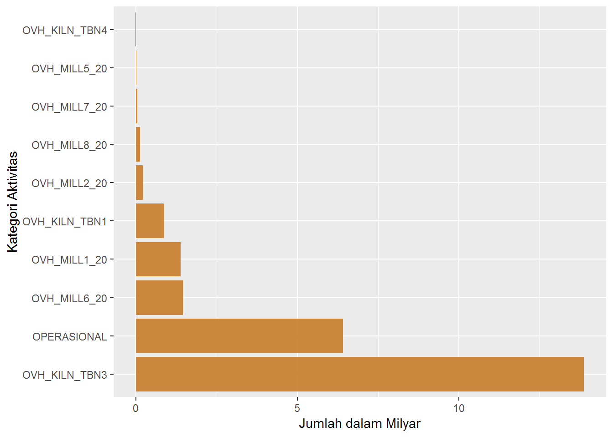
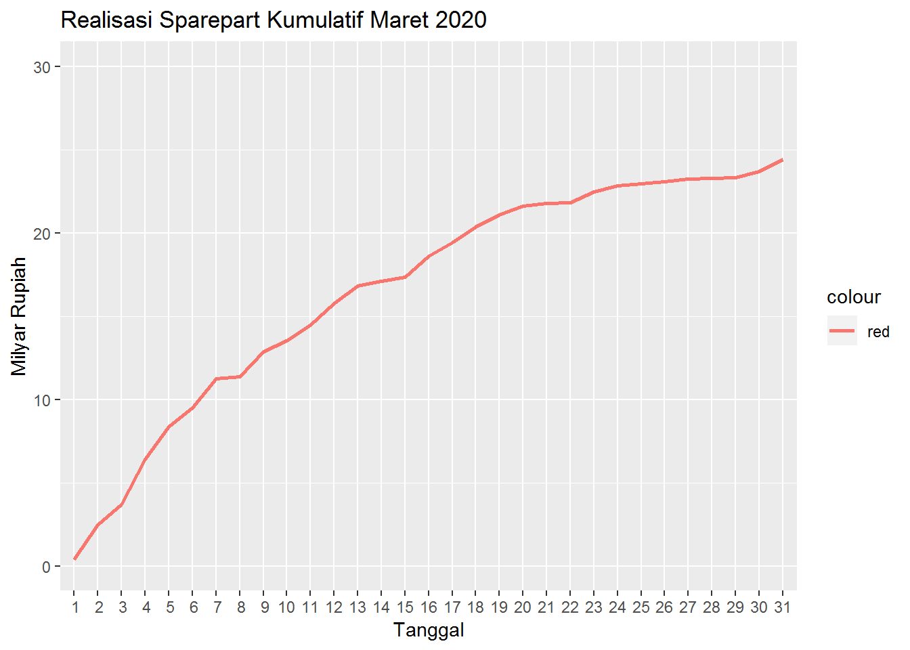

Februari 2020
Report Maret 2020
Halaman ini berisi laporan ajuan dan realisasi sparepart periode maret 2020
Tabel Ajuan dari User
Daftar Jumlah Realisasi sparepart per unit kerja
| NAMA.SEKSI.PG | jumlah |
|---|---|
| SECTION OF AF & 3RD MATERIAL | 376,275,807 |
| SECTION OF CONSTRUCTION | 252,873,192 |
| SECTION OF CRUSHER ELINS MAINT | 138,288,835 |
| SECTION OF CRUSHER MACHINE MAINTENANCE | 1,461,662,788 |
| SECTION OF CRUSHER OPERATION | 45,147,998 |
| SECTION OF ELECTRICAL & INSTR WORKSHOP | 704,966,251 |
| SECTION OF EPDC MAINTENANCE | 1,158,272,406 |
| SECTION OF FM 1-2 ELECT & INSTR MAINT | 392,092,533 |
| SECTION OF FM 1-2 MACHINE MAINTENANCE | 780,523,657 |
| SECTION OF FM 1-2 OPERATION | 63,559,961 |
| SECTION OF FM 3-4 ELECT & INSTR MAINT | 191,698,987 |
| SECTION OF FM 3-4 MACHINE MAINTENANCE | 982,288,839 |
| SECTION OF FM 3-4 OPERATION | 54,317,900 |
| SECTION OF GRESIK PLANT OPERATION | 6,480,000 |
| SECTION OF GRESIK PLANT&PORT ELECT MAINT | 9,241,106 |
| SECTION OF GSK PLANT&PORT MACHINE MAINT | 21,589,837 |
| SECTION OF HYGIENE | 49,858,142 |
| SECTION OF KCM 1-2 MACHINE MAINTENANCE | 545,572,287 |
| SECTION OF KCM 3-4 MACHINE MAINTENANCE | 4,787,924,671 |
| SECTION OF MACHINE WORKSHOP | 1,231,862,594 |
| SECTION OF MAINTENANCE INSPECTION | 114,286 |
| SECTION OF PACKER & TBN PORT ELINS MAINT | 230,404,974 |
| SECTION OF PACKER OPERATION | 12,014,962 |
| SECTION OF PACKER&TBN PORT MACHINE MAINT | 482,007,332 |
| SECTION OF RKC 1-2 ELECTRICAL MAINT | 468,405,300 |
| SECTION OF RKC 1-2 INSTRUMENT MAINT | 760,001,972 |
| SECTION OF RKC 1 OPERATION | 15,355,570 |
| SECTION OF RKC 2 OPERATION | 45,181,210 |
| SECTION OF RKC 3-4 ELECTRICAL MAINT | 481,845,260 |
| SECTION OF RKC 3-4 INSTRUMENT MAINT | 385,586,323 |
| SECTION OF RKC 3 OPERATION | 1,936,503,435 |
| SECTION OF RKC 4 OPERATION | 33,617,739 |
| SECTION OF RM 1-2 MACHINE MAINTENANCE | 306,487,319 |
| SECTION OF RM 3-4 MACHINE MAINTENANCE | 2,354,001,257 |
| SECTION OF UTILITY MAINTENANCE | 3,318,971,421 |
| SECTION OF UTILITY OPERATION | 71,089,794 |
| UNIT OF GENERAL AFFAIR & ASSET | 54,638,731 |
| UNIT OF MAINTENANCE INSPECTION | 15,974,401 |
| UNIT OF QUALITY CONTROL | 54,623,086 |
| UNIT OF TUBAN & GRESIK SHE | 127,223,700 |

garis
Realisasi sparepart berdasarkan kategori aktivitas

DAFTAR AJUAN MARET 2020 (versi2)
REALISASI KUMULATIF
 END